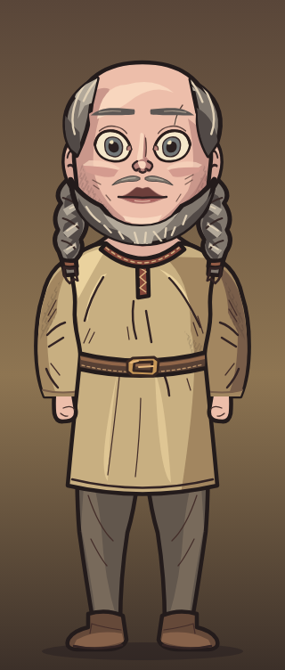
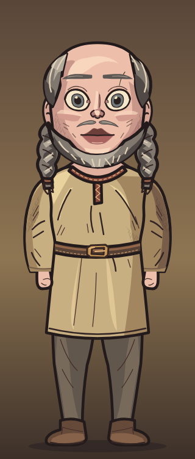

<!doctype html><html lang="ru"><meta charset="utf-8"><meta name="viewport" content="width=device-width,initial-scale=1"><title>Толщина нижней губы</title><style>body{font:16px system-ui;background:#25201b;color:#eee2cd;margin:0 auto;max-width:1280px;padding:1rem}
    a{color:#f4ca91}h1,h2{font:700 1.7rem Georgia,serif}nav ul{columns:3}.grid{display:grid;gap:1rem;
    grid-template-columns:repeat(auto-fit,minmax(230px,1fr))}article{min-width:0;border:1px solid #655343;
    background:#312821;padding:.6rem;border-radius:5px}a img{vertical-align:middle}img{max-width:100%;height:auto}
    .character{display:block;max-height:460px;width:auto;margin:auto}.card{width:32px;height:32px}
    .detail{display:block;width:100%;margin:.35rem 0}.compare{display:flex;align-items:flex-start;gap:.5rem}
    .compare a{flex:1;min-width:0}small{color:#dccab0}code{overflow-wrap:anywhere}@media(max-width:730px){nav ul{columns:1}}</style><main><nav><a href="index.html">Все разделы</a></nav><h1>Толщина нижней губы</h1><div class="grid"><article id="appearance__lower_lip__standard"><h3>Обычная</h3><code>standard</code><a href="images/50af0888d35a514f7f3dbf3d6739980024b4486791a50724ed728543c68a8108.png"></a><p><a href="images/3422cebb4ca0d9e529f22025ec3fae4d3b39f7b4c7e0573993dbffa362b6a022.png"></a> <small>32 × 32</small></p></article>
<article id="appearance__lower_lip__thin"><h3>Тонкая</h3><code>thin</code><a href="images/5f8f3221992c4690cf12ce9f9b6ece1d8de9ab86da8fa71a4db8a5f82c304d55.png"></a><p><a href="images/d874f518a1c02fdaa19e0edf1c7059be7c9dc6e3e4da216cdd6f152bb790368f.png"></a> <small>32 × 32</small></p></article>
<article id="appearance__lower_lip__full"><h3>Полная</h3><code>full</code><a href="images/6053b435fd5f1a0c190ce7015d80a0a3cd9b8c471f6d1a972f410d98649daaf7.png"></a><p><a href="images/fab838e8126517d7c913e47f1224fd65ca79ab023ac356799ba734e22140c9df.png"></a> <small>32 × 32</small></p></article></div></main></html>
